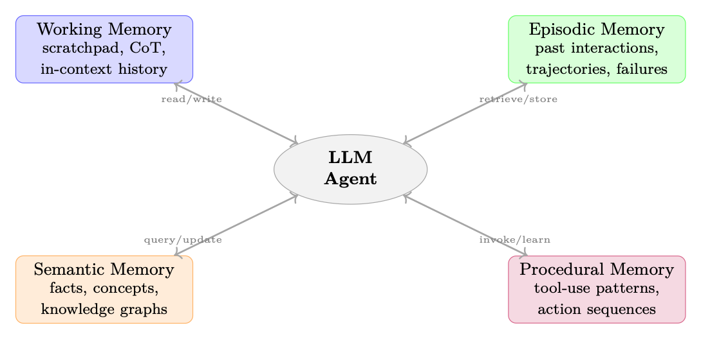

动机：为什么智能体需要记忆
本节聚焦“动机：为什么智能体需要记忆”的定义、机制与工程含义。
具备目标导向、工具使用、环境交互和多步执行能力的 AI 系统。
能够感知状态、规划行动、调用工具并迭代完成任务的系统单元。
语言模型处理文本的基本离散单位。
在状态下选择动作或生成 token 的概率分布。
模型在部署或测试时生成输出的过程。
大型语言模型的核心是无状态函数逼近器：给定提示 x，它们 产生连续 pθ(y | x) 上的分布。每个推理调用都从头开始。的 上下文窗口（模型可以处理的标记的有限序列）是唯一的信息 在生成时可用。对于简单的、独立的任务来说，这已经足够了。对于长期智能体 任务是一个根本瓶颈。
上下文窗口瓶颈
让 L 表示最大上下文长度（例如，对于 GPT-4o，L = 128,000 个标记）。单个token编码大约 4 个字符；一本典型的书包含约 500,000 个单词约 670,000 个标记。甚至 忽略成本，多天的自主智能体会积累观察结果、工具输出和推理 无法适合任何固定窗口的痕迹。内存系统是对此的工程响应 身体限制。
当智能体缺乏持久内存时，会出现三种不同的故障模式：
1. 灾难性的忘记上下文。一旦事件滚动出上下文窗口，它就会 无法挽回地丢失了。智能体无法参考 10,000 个token前做出的决定。
2. 无法从经验中学习。如果没有情景存储，每个情景都是智能体的 首先。成功的策略不能重复使用；错误不断重复。
3、缺乏个性化。用户偏好、领域事实和关系历史必须 在每个会话中重新建立，降低用户体验和效率。
记忆作为认知架构
认知科学区分了生物制剂中的几种记忆系统 [305, 306]： 记忆（信息的主动操作）、情景记忆（自传事件）、语义 记忆（世界知识）和程序记忆（技能和习惯）。有效的智能体式 AI 系统 从类似的区别中受益——不是因为我们正在模拟神经科学，而是因为这些 类别反映了真正不同的访问模式、更新频率和检索机制。
形式上，我们将智能体建模为元组 A = (πθ, M, R, W)，其中 πθ 是策略（LLM），M是内存存储，R : Q × M →D 是将查询映射到检索到的文档的检索函数，W : M × E →M 是一个写入函数，用新的经验 E 更新内存。在每一步 t智能体观察 ot，检索相关上下文 ct = R(ot, M)，并执行以下操作：at ∼πθ(· | [st; ct; ht]) ,其中 st 是当前系统提示符，ct 是检索的内存，ht 是最近的上下文历史记录。 行动后，智能体可以写入新信息：M←W(M,(ot,at,rt))。
记忆类型分类
本节聚焦“记忆类型分类”的定义、机制与工程含义。
能够感知状态、规划行动、调用工具并迭代完成任务的系统单元。
智能体与环境交互形成的状态、动作、观察和奖励序列。
保存经验、轨迹或中间数据以供训练和分析的结构。
模型在部署或测试时生成输出的过程。
图 17.1：主体记忆系统的四向分类法，反映了认知科学的区别。每个 内存类型具有不同的访问模式、更新频率和检索机制。
内存类型分类
工作记忆（短期）
工作记忆是智能体的活动工作空间：当前正在处理的信息。在 它对应的LLM智能体：
• 便签本。在生成之前将中间推理步骤写入专用缓冲区 最终答案（例如思想链[122]、草稿本[307]）。
• 思想链缓冲区。推理标记 z1、z2、... 的序列。。。 ,之前生成的zk 答案标记 a，建模为 p(a | x) = P z p(a | x, z) p(z | x)。
• 对话上下文。最近的回合历史记录 [(u1, a1), .。。 , (ut, at)] 保留在上下文中 窗口。
工作记忆速度快（零检索延迟——它已经在上下文中）、易失性（当检索时丢失） 上下文被清除），并且容量有限（以 L 为界）。
情景记忆（基于经验）
情景记忆存储按上下文和时间索引的特定过去事件。对于智能体商：
• 过去的互动。先前对话、任务尝试和的完整或摘要记录 他们的结果。
• 成功的轨迹。可以通过几次镜头检索的高奖励动作序列 未来类似任务的范例。
• 失败案例。通过根本原因注释记录错误，使智能体能够避免 重复错误。
• 检索增强情景回忆。给定一个新任务 q，检索 k 个最相似的过去 剧集 {ei}k
i=1 并将它们包含在上下文中。情景记忆通常被实现为向量存储（第 17.3.1 节），嵌入超过 情节摘要。

记忆架构
本节聚焦“记忆架构”的定义、机制与工程含义。
能够感知状态、规划行动、调用工具并迭代完成任务的系统单元。
语言模型处理文本的基本离散单位。
先检索外部知识，再让模型基于上下文生成答案。
在状态下选择动作或生成 token 的概率分布。
智能体与环境交互形成的状态、动作、观察和奖励序列。
语义记忆（世界知识）
语义记忆编码与特定事件分离的一般事实和概念：
• 事实知识。实体、属性和关系（例如“巴黎是 法国”）。
• 领域概念。与智能体任务相关的定义、分类法和本体论 域。
• 知识图。结构化表示 G = (V, E) 其中节点 v ∈V 是实体边 e ∈E 是类型关系。
与情景记忆不同，语义记忆与上下文无关：水在 无论何时何地得知，100°C 都是正确的。
程序记忆（技能）
程序记忆编码如何做事——已经自动化的技能和行动模式：
• 学习工具使用模式。为哪个任务调用哪个 API、如何格式化输入、如何 处理错误。
• Action sequences. Multi-step procedures (e.g. “to deploy code: run tests →build image → push →update manifest”).• 政策作为记忆。模型权重 θ 本身编码程序知识；很好- 调整成功的轨迹是程序性记忆巩固的一种形式。
内存类型分类
帮助软件开发的智能体使用：
• 工作中：当前正在编辑的文件，刚刚收到的错误消息。
• Episodic：“上周我通过添加一个在模块 X 中修复了类似的 NullPointerException 第 42 行进行空检查。”
• 语义：“Python 的 asyncio.gather 同时运行协程；异常传播
除非 return_exceptions=True。”• Procedural: the standard debugging workflow: reproduce →isolate →hypothesize →test →fix.内存架构
基于 RAG 的内存
检索增强生成（RAG）[128]是外部记忆的主导范例 LLM智能体。内存存储M是文档{di}N的集合 我=1；检索将查询 q 映射到 排序的子集。
嵌入存储和矢量数据库。 每个文档 di 都通过嵌入进行编码
模型 ψ：vi = ψ(di) εRD。查询的编码方式类似：q = phi(q)。检索返回top-k按相似度排列的文档：
检索（q，M，k）= 最大精量 S⊆[N], |S|=k
i∈S 模拟（q，vi），
其中 sim(·,·) 通常是余弦相似度。近似最近邻（ANN）指数（FAISS [275]， HNSW [276]、ScaNN [308]）使 N ∼107 易于处理。
检索策略。
• 密集检索。查询和文档均由神经编码器编码（例如 DPR [274]， 文本嵌入-3-大）。捕获语义相似性，但需要 GPU 推理。
• 稀疏检索。 BM25 或 TF-IDF token重叠。快速、可解释、精确性强 关键词匹配。
• 混合检索。通过倒数秩融合 (RRF) 组合密集和稀疏分数：
RRF(d, k) = Xk + 等级r(d),
r ∈ 排序者
其中 k = 60 是平滑常数。混合动力始终优于单独的动力[309]。重新排名。 交叉编码器重新排序器 fψ(q, d) ∈[0, 1] 对每个检索到的文档进行联合评分 查询，以 O(k) 次前向传递为代价提供更高的准确性。流水线是：检索 k′ ≫k 个带有 ANN 的候选者，用交叉编码器重新排序，返回前 k 个。
检索幻觉风险 RAG 并不能消除幻觉——它可以引入幻觉。如果检索到的文档已过时， 如果模型不正确或仅表面相关，则模型可能会自信地包含错误信息。 始终包含出处元数据（来源、时间戳、置信度）并考虑可信度 验证步骤。
基于概括的记忆
当逐字存储太昂贵或噪音太大时，摘要会先压缩信息 存储。
渐进式总结。 在每个步骤 t，智能体都会维护一个运行摘要 St。 新信息到达：
St+1 = LLM(“总结： [St] + [et]”）。
这使内存大小保持为 O(1)，但有丢失细节的风险。
分层压缩。 按 L0 ⊃L1 ⊃· · · ⊃LK 级别组织内存，其中 L0 是逐字记录的 每个Li+1都是Li的总结。检索首先检查LK（最压缩、最快）和演练 根据需要向下。这反映了 Forte [310] 的渐进式摘要技术。
何时总结与逐字存储。
• 逐字存储：精确的事实、代码片段、数值结果、用户引用。
• 总结：叙述背景、推理链、冗余观察。
• 丢弃：噪音、没有信息内容的失败工具调用。
基于图形的内存
知识图谱。
知识图 G = (V, E, R) 将事实存储为三元组 (h, r, t)，其中h, t ∈V 是实体，r ∈R 是关系。智能体可以通过 SPARQL [311]、Cypher [312] 或 自然语言到图形的翻译。
实体关系提取。 新的观察结果由提取模型 IE 进行解析：文本 → {(hi, ri, ti)} 并合并到 G 中。共指解析和实体链接确保一致性。
记忆操作
本节聚焦“记忆操作”的定义、机制与工程含义。
能够感知状态、规划行动、调用工具并迭代完成任务的系统单元。
以自注意力为核心的序列建模架构。
根据查询、键和值计算上下文加权表示的机制。
通过奖励信号优化策略的学习范式。
在状态下选择动作或生成 token 的概率分布。
图RAG。 GraphRAG [290] 通过图遍历增强 RAG：给定查询，检索种子 实体，然后通过 k-hop 邻域遍历扩展到不直接匹配的表面相关事实 通过嵌入相似性。这对于多跳推理特别强大：
GraphRetrieve(q, G, k) = [v ∈ 种子(q) Nk(v, G),
其中 Nk(v, G) 是 v 的 k 跳邻域。
时态知识图。 事实具有有效性区间：（h，r，t，[tstart，tend]）。颞叶 KG [313] 支持诸如“谁是 2023 年 OpenAI 的首席执行官？”之类的查询。不混淆过去和 目前的状态。
键值存储网络
Differentiable memory networks [314, 315] represent memory as a set of key-value pairs {(ki, vi)}M
i=1
with soft attention-based retrieval:中号 X
q⊤ki √
, c =αi=softmax
我=1 αivi。
检索到的上下文 c 是查询的可微函数，支持端到端训练。现代 Transformer注意力是这种机制的一个特例。对于智能体使用，内存插槽可以 通过梯度下降或通过显式写入操作更新。
MemGPT 和虚拟上下文管理
MemGPT [316]引入了虚拟上下文抽象，类似于操作中的虚拟内存 系统。内存按层组织：
页入/页出策略。 智能体决定将哪些内存提升到热上下文 （页入）和逐出（页出）基于：
• 新近度：最近访问过的项目更有可能被需要。
• 相关性：与当前查询高度相似的项目。
• 重要性：写入期间标记为高重要性的项目。
自引导内存管理。 在MemGPT中，LLM本身发布内存管理 函数调用（memory_search、memory_insert、memory_delete）作为其操作空间的一部分。这个 使内存管理成为一种学习行为而不是硬编码策略——一个自然的目标 用于 RL 训练（第 17.7 节）。
内存操作
写作：牢记记忆
并非所有观察结果都应该被存储。写决策是一个过滤问题：
写入(e) = 1[重要性(e) > τ] ,
其中 τ 是阈值，重要性（e）可以是：
• 惊喜：−log pθ(e | context)——意外事件提供更多信息。
• 奖励信号：与高|rt| 相关的事件（正面或负面）值得记住。
• LLM 自我评估：提示模型按 1-10 等级对重要性进行评级。
矛盾检测。 在编写新事实 fnew 之前，检查是否与现有事实发生冲突 内存：
冲突(fnew, M) = ∃f ∈M : 矛盾(fnew, f)。矛盾检测可以通过 NLI 模型或通过提示 LLM 来实现。关于冲突， 智能体必须决定：覆盖、保留时间戳或标记以供人工审核。
内存格式和粒度。 除了存储什么之外，如何存储也非常重要。内存 条目范围从原子事实到详细的记录，具有明显的权衡：
表 17.1：内存粒度权衡。
格式 优点 缺点
失去上下文；提取错误；脆性为 nu- 先进信息
原子事实 “用户更喜欢 Python。” 精准检索；可组合； 简单的重复数据删除和反 措辞检测
写入成本较高；需要架构设计
结构化笔记 （A-MEM [317]） 丰富的元数据（标签、链接）； 支持图的遍历；巴尔- 精度和上下文
总结有损；很难部分更新
剧集摘要 （MemGPT [316]） 保持叙述的连贯性； 袖珍的;适合多转
逐字记录 无损；无提取错误； 支持精确报价 存储空间大；嘈杂的检索；扫描费用昂贵
在实践中，生产系统经常结合粒度[318]：提取原子事实以获得精确的结果 回忆、维护叙述背景的摘要事件以及冷存档逐字记录 存储以实现可审计性。生成智能体架构[319]将观察结果存储为原子 具有自然语言描述、重要性分数和时间戳的“记忆对象” 精确检索和时间推理。
设计指南。
• 将粒度与查询类型相匹配。如果用户询问事实问题（“我的 API 密钥是什么？”）， 原子事实获胜。如果他们提出上下文问题（“为什么我们决定使用 Redis？”），情节 需要总结。
• 存储在您能负担得起的最细粒度上，然后在顶部构建较粗略的视图。这很容易 总结原子事实；从有损摘要中恢复原子是不可能的。
• 包括出处。每个记忆条目都应该链接回其来源（对话轮， 文档、工具输出），以便智能体可以验证并且用户可以审核。
阅读/检索
查询表述。 检索查询 q 不必是原始观察。更好的策略：
• HyDE（假设文档嵌入）[286]：生成假设答案， 嵌入它，并使用该嵌入作为查询。
• 查询扩展：生成查询的多个释义并取检索到的并集 结果。
• 后退提示：在检索之前将特定查询抽象为更一般的问题。
时间衰退和新近度偏差。 较旧的记忆可能不太相关。时间加权 分数：！
-t -td
score(d, q, t) = λ · sim(q, vd) + (1 −λ) · expτ衰变
其中 td 是内存的创建时间，τdecay 控制衰减率。生成智能体 论文[319]使用了类似的新近度加权检索。
更新：冲突解决和整合
内存整合合并相关内存以减少冗余并呈现更高级别 图案： M′ = 合并(M) = 聚类(M) ∪汇总(聚类(M))。
遗忘机制。 生物记忆会忘记；人工记忆也应该如此。策略：
• LRU 逐出：超出容量时删除最近最少使用的条目。
• 重要性加权遗忘：p(forget | d) ∝exp(−importance(d))。
• 间隔重复：重复访问的内存保留时间更长，遵循指数 整体遗忘曲线[320]。
反思：元认知操作
反射 [224, 319] 是一个高阶内存操作：智能体读取自己的内存并 产生见解： 反射(M) →{i1, i2, .。 .} ⊂语义，
其中每个见解 ij 都是从多个情景记忆中得出的更高层次的抽象。
实践反思（反思）
在三次尝试解决编码问题失败后，智能体反映：
1. 从情景记忆中检索三个失败情景。
2. 产生洞察力：“我总是忘记处理输入列表的边缘情况 空的。”
3. 将这种见解存储在语义记忆中。
4. 在下一次尝试时，检索洞察并显式检查是否有空输入。
这就是反射[224]的核心机制：通过自我反射进行言语强化学习。
反思在哪里？ 反射从情景记忆中读取，但写入语义 记忆。由此产生的见解是与上下文无关的概括（“始终检查空的 输入”），而不是特定于情节的记录——因此它们属于语义记忆 Msemantic。然而， 在反思过程本身中，中间推理（检索片段+综合提示 +生成的洞察力）占用工作内存（上下文窗口）。简而言之：
• 输入：情景记忆（特定的过去事件）
• 计算：工作记忆（上下文中的主动推理）
• 输出：语义记忆（持久的、概括性的洞察力）
这反映了生物记忆的巩固，情景经历逐渐转变 在睡眠和反思期间转化为语义知识。
多轮对话记忆
本节聚焦“多轮对话记忆”的定义、机制与工程含义。
能够感知状态、规划行动、调用工具并迭代完成任务的系统单元。
模型在部署或测试时生成输出的过程。
用户建模和偏好跟踪
持久用户模型U存储：
• 明确的偏好：明确表达的喜欢/不喜欢、沟通方式偏好。
• 隐式偏好：从行为推理（例如，用户总是要求使用 Python 编写代码，更喜欢 简洁的答案）。
• 专业水平：从词汇和问题复杂性推理出的领域知识。
• 目标和背景：正在进行的项目、当前任务、组织角色。
每次交互后用户模型都会更新：
Ut+1 = Update(Ut, (ut, at, feedbackt)).会话连续性
没有记忆，每次谈话都会变得冷淡。使用会话内存：
1. 在会话开始时，检索用户模型 U 和最近的会话摘要。
2. 注入个性化系统提示：“您正在帮助 Alice，一位高级 ML 工程师，致力于 分布式训练项目。上一次会议您帮助调试了梯度同步问题。”
3. 在会议结束时，总结会议并更新 U.
通过记忆进行个性化
个性化提高了效率（更少的澄清问题）和质量（校准的响应） 用户的专业知识）。关键技术：
• 自适应详细程度：根据用户的历史参与情况调整响应长度。
• 领域启动：从语义记忆中添加相关领域上下文。
• 主动回忆：在没有被询问的情况下显示相关的过去互动（“你问过 上个月这个话题；这就是我们当时发现的”）。
隐私和内存
持久的用户记忆引发了严重的隐私问题。智能体必须： (1) 获得明确的 在存储个人信息之前征得同意，(2) 提供检查和删除存储的机制 存储器，(3) 在多用户部署中实施访问控制，以及 (4) 遵守数据保留 法规（GDPR、CCPA）。内存系统的设计应该默认隐私。
多智能体系统的内存
当多个智能体协作完成一项共享任务时，内存就成为一种协调机制，而不是 只是一个个人知识库。分解任务的规划智能体必须传达子目标 执行智能体；批评智能体必须访问与其评估的智能体相同的上下文；一项研究 智能体团队必须避免重复工作。如果没有共享内存，智能体必须进行通信 一切都通过直接消息进行，造成带宽瓶颈并在以下情况下丢失信息： 对话脱离上下文。共享内存通过提供持久的、可查询的解决方案来解决这个问题 所有智能体都可以读取和写入的基底——转变隐式协调（“我希望 其他智能体记得”）进入明确状态（“答案在黑板上”）。
多智能体系统记忆
本节聚焦“多智能体系统记忆”的定义、机制与工程含义。
能够感知状态、规划行动、调用工具并迭代完成任务的系统单元。
模型在部署或测试时生成输出的过程。
用户建模和偏好跟踪
持久用户模型U存储：
• 明确的偏好：明确表达的喜欢/不喜欢、沟通方式偏好。
• 隐式偏好：从行为推理（例如，用户总是要求使用 Python 编写代码，更喜欢 简洁的答案）。
• 专业水平：从词汇和问题复杂性推理出的领域知识。
• 目标和背景：正在进行的项目、当前任务、组织角色。
每次交互后用户模型都会更新：
Ut+1 = Update(Ut, (ut, at, feedbackt)).会话连续性
没有记忆，每次谈话都会变得冷淡。使用会话内存：
1. 在会话开始时，检索用户模型 U 和最近的会话摘要。
2. 注入个性化系统提示：“您正在帮助 Alice，一位高级 ML 工程师，致力于 分布式训练项目。上一次会议您帮助调试了梯度同步问题。”
3. 在会议结束时，总结会议并更新 U.
通过记忆进行个性化
个性化提高了效率（更少的澄清问题）和质量（校准的响应） 用户的专业知识）。关键技术：
• 自适应详细程度：根据用户的历史参与情况调整响应长度。
• 领域启动：从语义记忆中添加相关领域上下文。
• 主动回忆：在没有被询问的情况下显示相关的过去互动（“你问过 上个月这个话题；这就是我们当时发现的”）。
隐私和内存
持久的用户记忆引发了严重的隐私问题。智能体必须： (1) 获得明确的 在存储个人信息之前征得同意，(2) 提供检查和删除存储的机制 存储器，(3) 在多用户部署中实施访问控制，以及 (4) 遵守数据保留 法规（GDPR、CCPA）。内存系统的设计应该默认隐私。
多智能体系统的内存
当多个智能体协作完成一项共享任务时，内存就成为一种协调机制，而不是 只是一个个人知识库。分解任务的规划智能体必须传达子目标 执行智能体；批评智能体必须访问与其评估的智能体相同的上下文；一项研究 智能体团队必须避免重复工作。如果没有共享内存，智能体必须进行通信 一切都通过直接消息进行，造成带宽瓶颈并在以下情况下丢失信息： 对话脱离上下文。共享内存通过提供持久的、可查询的解决方案来解决这个问题 所有智能体都可以读取和写入的基底——转变隐式协调（“我希望 其他智能体记得”）进入明确状态（“答案在黑板上”）。
用强化学习训练记忆系统
本节聚焦“用强化学习训练记忆系统”的定义、机制与工程含义。
能够感知状态、规划行动、调用工具并迭代完成任务的系统单元。
通过奖励信号优化策略的学习范式。
在状态下选择动作或生成 token 的概率分布。
共享内存池
在多智能体系统中，智能体可以与私有存储共享公共内存存储 Mshared 米： contexti(t) = R(Mi, qi) ∪R(Mshared, qi)。
共享内存可实现隐式协调：智能体 A 写入结果；智能体 B 检索它而无需 明确的沟通。
黑板架构
黑板模式[321]是一种经典的多智能体协调机制： 每个智能体都从黑板上读取数据并向黑板上写入数据。控制器监控黑板并 当满足先决条件时激活智能体。这将智能体解耦：他们通过 共享状态而不是直接消息传递。
共享知识中的共识和冲突
当多个智能体写入共享内存时，就会出现冲突。解决策略：
• 最后写入获胜：简单但丢失信息。
• 版本化内存：维护所有写入的历史记录；智能体商可以查询任意版本。
• 投票/共识：要求k-of-n 智能体在提交事实之前达成一致。
• 置信度加权合并：fmerged = P我的无线网络是我的信心智能体。
• 指定权限：将内存区域的所有权分配给特定智能体。
开放问题：分布式内存一致性
多Agent系统如何在并发写入、网络等情况下保持内存一致性 分区和敌对智能体？经典分布式系统解决方案（Paxos、Raft）适用 但价格昂贵。对于许多人来说，具有有限陈旧性的近似一致性可能就足够了 智能体任务——但正确的权衡是一个开放的研究问题。
通过强化学习训练记忆系统
内存操作的奖励信号
内存操作（读、写、更新、反射）可以被视为 RL 框架中的操作。的 挑战在于设计奖励信号来激励有用的记忆行为：
• 任务奖励传播。如果记忆检索得出正确答案，请记入 检索动作。稀疏但明确。
• 检索精度奖励。 rretrieve = 相关性（dretrieved，任务），由学习到的估计相关性模型。
• 记忆效率奖励。惩罚不必要的写入：rwrite = −λ·1[write]，鼓励选择性存储。
• 一致性奖励。奖励内部一致（无矛盾）的记忆状态。
第 t 步内存操作 mt 的综合奖励：
rmem t = rtask t + α · rretrieve t + β · rwrite t + γ · rconsistency t .记忆方法比较
本节聚焦“记忆方法比较”的定义、机制与工程含义。
能够感知状态、规划行动、调用工具并迭代完成任务的系统单元。
语言模型处理文本的基本离散单位。
根据查询、键和值计算上下文加权表示的机制。
通过奖励信号优化策略的学习范式。
在状态下选择动作或生成 token 的概率分布。
学习要记住什么
记住什么问题是一个元学习挑战：智能体必须学习写入策略 πwrite(e) 最大化未来任务性能。这很困难，因为：
1. 记忆的价值只有在未来才会显现（延迟奖励）。
2. 未来可能查询的空间在写入时是未知的。
3. 记忆相互作用：存储e的值取决于M中的其他内容。
方法：
• 事后重新标记[322]。在成功的一集之后，追溯性地标记那些记忆 被检索为“重要”并训练写入策略来存储类似的项目。
• 元强化学习[323]。跨任务分配训练写入策略；该策略学习存储 跨任务概括的信息。
• 好奇心驱动的存储[324]。存储令人惊讶的观察结果（高预测误差）， 因为这些可能会提供信息。
内存增强策略优化
联合优化策略及其记忆系统的想法可以追溯到可微记忆 网络[325]，并由 REALM [304] 扩展到检索增强的LLM。完整政策 记忆增强智能体的梯度目标：
” T X
−λ·Lmem(φ),
L(θ, ϕ) = Eτ∼πθ时间=0 γtrt
其中 θ 是 LLM 参数， phi 是记忆系统参数（例如检索模型权重）， Lmem 是内存复杂度的正则化项。
关键见解：记忆是一种习得的归纳偏差
通过强化学习训练记忆操作，智能体可以开发特定于任务的记忆策略。 编码智能体学习存储 API 签名；研究智能体学习存储引文链；一个 客户服务智能体学习存储用户投诉模式。记忆系统变成了 学习了适合智能体领域的归纳偏差。
内存方法的比较
表 17.2：跨关键维度的智能体内存架构比较。
建筑 容量 检索 更新成本 可训练 最适合
上下文中（工作） O(L) token 0毫秒 免费 通过微调 任务短，推理活跃 浓密的碎布 [128] O(107) 文档 10–50 毫秒 O(1) 嵌入 仅编码器 语义搜索、质量保证 稀疏（BM25）[273] O(108) 文档 1–5 毫秒 O(|d|) 指数 否 关键词搜索，法律/医疗 混合 RAG [309] O(107) 文档 15–60 毫秒 O(1) 嵌入 仅编码器 通用检索 总结 无限 0 毫秒（ctx 内） O(|e|) LLM 通话 通过微调 长篇大论、长篇大论 知识图谱[313] O(109) 三元组 5–100 毫秒 O(1) 插入 嵌入层 结构化事实，多跳 KV内存网[315] O(M) 个槽位 O(M) 注意力 梯度步长 完全 端到端可微任务 MemGPT 分层 [316] 无限 0–100 毫秒 混合 通过RL 长视智能体、助理 图 RAG [290] O(107) 个节点 20–200 毫秒 O(1) 插入 仅编码器 复杂推理、社区
评估内存系统
评估智能体记忆具有挑战性，因为记忆操作的质量只能被揭示 间接地——通过长期的下游任务绩效。一个记忆系统可以实现 如果检索到不相关的上下文或压倒了LLM的知识，对存储事实的完美回忆仍然可能失败 上下文窗口。
记忆系统评估
本节聚焦“记忆系统评估”的定义、机制与工程含义。
能够感知状态、规划行动、调用工具并迭代完成任务的系统单元。
语言模型处理文本的基本离散单位。
根据查询、键和值计算上下文加权表示的机制。
通过奖励信号优化策略的学习范式。
在状态下选择动作或生成 token 的概率分布。
学习要记住什么
记住什么问题是一个元学习挑战：智能体必须学习写入策略 πwrite(e) 最大化未来任务性能。这很困难，因为：
1. 记忆的价值只有在未来才会显现（延迟奖励）。
2. 未来可能查询的空间在写入时是未知的。
3. 记忆相互作用：存储e的值取决于M中的其他内容。
方法：
• 事后重新标记[322]。在成功的一集之后，追溯性地标记那些记忆 被检索为“重要”并训练写入策略来存储类似的项目。
• 元强化学习[323]。跨任务分配训练写入策略；该策略学习存储 跨任务概括的信息。
• 好奇心驱动的存储[324]。存储令人惊讶的观察结果（高预测误差）， 因为这些可能会提供信息。
内存增强策略优化
联合优化策略及其记忆系统的想法可以追溯到可微记忆 网络[325]，并由 REALM [304] 扩展到检索增强的LLM。完整政策 记忆增强智能体的梯度目标：
” T X
−λ·Lmem(φ),
L(θ, ϕ) = Eτ∼πθ时间=0 γtrt
其中 θ 是 LLM 参数， phi 是记忆系统参数（例如检索模型权重）， Lmem 是内存复杂度的正则化项。
关键见解：记忆是一种习得的归纳偏差
通过强化学习训练记忆操作，智能体可以开发特定于任务的记忆策略。 编码智能体学习存储 API 签名；研究智能体学习存储引文链；一个 客户服务智能体学习存储用户投诉模式。记忆系统变成了 学习了适合智能体领域的归纳偏差。
内存方法的比较
表 17.2：跨关键维度的智能体内存架构比较。
建筑 容量 检索 更新成本 可训练 最适合
上下文中（工作） O(L) token 0毫秒 免费 通过微调 任务短，推理活跃 浓密的碎布 [128] O(107) 文档 10–50 毫秒 O(1) 嵌入 仅编码器 语义搜索、质量保证 稀疏（BM25）[273] O(108) 文档 1–5 毫秒 O(|d|) 指数 否 关键词搜索，法律/医疗 混合 RAG [309] O(107) 文档 15–60 毫秒 O(1) 嵌入 仅编码器 通用检索 总结 无限 0 毫秒（ctx 内） O(|e|) LLM 通话 通过微调 长篇大论、长篇大论 知识图谱[313] O(109) 三元组 5–100 毫秒 O(1) 插入 嵌入层 结构化事实，多跳 KV内存网[315] O(M) 个槽位 O(M) 注意力 梯度步长 完全 端到端可微任务 MemGPT 分层 [316] 无限 0–100 毫秒 混合 通过RL 长视智能体、助理 图 RAG [290] O(107) 个节点 20–200 毫秒 O(1) 插入 仅编码器 复杂推理、社区
评估内存系统
评估智能体记忆具有挑战性，因为记忆操作的质量只能被揭示 间接地——通过长期的下游任务绩效。一个记忆系统可以实现 如果检索到不相关的上下文或压倒了LLM的知识，对存储事实的完美回忆仍然可能失败 上下文窗口。
评估维度
LongMemEval [326] 确定了长期记忆系统必须展示的五个核心功能：
1.信息提取。系统能否识别并存储对话中的显着事实 轮流？通过事实回忆来衡量：可以从事实中恢复多少比例的真实事实 记忆？
2.多会话推理。系统能否综合分散在多个领域的信息？ 过去的会议？例如，“根据我们上周和昨天的谈话， 项目范围？”
3.时间推理。系统能否正确回答与时间相关的查询？例如，“什么 我有说过重组之前这是我的首要任务吗？”需要区分时间状态。
4.知识更新。当事实发生变化（用户移动城市、偏好发生变化）时，记忆会发生变化吗？ 在保留历史的同时反映最新状态？
5. 弃权。当系统没有相关记忆时，它是否正确地说“我不知道” 而不是产生一种看似合理但捏造的回忆的幻觉？
基准测试测试
表 17.3：评估智能体记忆系统的基准测试。
基准测试测试 场地 规模 焦点
长内存评估 [326] ICLR 2025 500 个问题，规模 能干的历史 五种记忆能力；多会话 聊天 乐科莫 [327] 欧洲管理国家实验室 2024 多会话 直径- 洛格斯 单跳， 暂时的， 多跳， 通过对话进行开放域质量检查 InfiniteBench [328] 2024年ACL 10万+ token 反- 文本 长上下文回忆，而不是记忆—— 具体但测试限制
指标
内存级别指标。
• 记忆回忆：# 可从记忆中检索的真实事实
# 全部真实事实。衡量存储的完整性。• 内存精度：top-k 检索中的# 相关项目 k。测量检索中的噪声。
• 延迟：从查询到检索上下文的时间（p50 和p95）。
• token效率：每个查询注入上下文的token总数。越低越好——没必要 上下文会降低 LLM 的准确性并增加成本。
下游指标。
• 答案准确性：以记忆为条件的最终答案的正确性（EM、F1 或 LLM作为法官）。
• 忠实性：回答是否准确地反映了记忆中包含的内容，而不是捏造的？
• 个性化质量：用户满意度，通过偏好评级或 A/B 测试来衡量 记忆增强系统和无记忆系统之间。
• 矛盾率：系统产生与之前不一致的响应的频率 陈述的事实。
实现模式
本节聚焦“实现模式”的定义、机制与工程含义。
能够感知状态、规划行动、调用工具并迭代完成任务的系统单元。
语言模型处理文本的基本离散单位。
模型在部署或测试时生成输出的过程。
通过裁剪目标限制策略更新幅度的强化学习算法。
运营指标。
• 写入选择性：触发存储器写入的匝数分数。太高→噪音；太低 → 差距。
• 过时性：尽管存在更新，但检索过时事实的频率。
• 存储增长率：每个交互小时存储的token。无限制的增长是不可持续的。
评估差距
大多数记忆论文都会在短期基准测试（10-50 个会话）上进行评估。真实生产智能体运行 长达数月的数千次会议。长期评估——记忆漂移、矛盾 积累和存储膨胀成为主要的故障模式——仍然是一个开放的挑战。 从业者应通过对运营的纵向监控来补充基准测试分数 指标。
实施模式
带嵌入的向量存储内存
最常见的内存模式将条目存储为嵌入向量与元数据（次- 标记、重要性分数、标签）。检索结合了余弦相似性和时间衰减，所以最近 重要的记忆首先浮现。重复检测和 LRU 驱逐使存储保持有界。
import
numpy as np
from
dataclasses
import
dataclass , field
from
datetime
import
datetime
from
typing
import
Optional
import
json@dataclass
class
MemoryEntry:
"""A single
memory
entry
with
metadata."""
content: str
embedding: np.ndarray
timestamp: datetime = field( default_factory =datetime.now)
importance: float = 0.5
access_count: int = 0
last_accessed: Optional[datetime] = None
tags: list[str] = field( default_factory =list)
source: str = "agent"class
VectorMemoryStore :
"""
Hybrid
dense+sparse
memory
store
with
temporal
decay.
Supports
importance -weighted
retrieval
and LRU
eviction.
"""def
__init__(
self ,
embed_fn ,
# callable: str -> np.ndarray
max_entries: int = 10_000 ,
decay_rate: float = 0.01,
# per hour
recency_weight : float = 0.3,
):self.embed_fn = embed_fn
self.max_entries = max_entries
self.decay_rate = decay_rate
self.recency_weight = recency_weight
self.entries: list[MemoryEntry] = []# -- Write
--------------------------------------------------------------定义写入（
self ,
content: str ,
importance: float = 0.5,
tags: list[str] | None = None ,
check_duplicates : bool = True ,
) -> MemoryEntry:"""Commit a new memory , evicting if at capacity."""
if check_duplicates
and self. _is_duplicate (content):
return
None
# Skip near -duplicate
entriesembedding = self.embed_fn(content)
entry = MemoryEntry(content=content ,
embedding=embedding ,
importance=importance ,
tags=tags or [],
)if len(self.entries) >= self.max_entries:self._evict ()self.entries.append(entry)
return
entrydef
_is_duplicate(self , content: str , threshold: float = 0.95)
-> bool:
"""Check if a near -duplicate
already
exists."""
if not self.entries:return
False
emb = self.embed_fn(content)
sims = self. _cosine_similarities (emb)
return
float(np.max(sims)) > thresholddef _evict(self):"""Remove the least
important + least
recent
entry."""
now = datetime.now()
scores = []
for e in self.entries:age_hours = (now - e.timestamp). total_seconds () / 3600
recency = np.exp(-self.decay_rate * age_hours)
score = e.importance * (1 - self. recency_weight ) \+ recency * self. recency_weight
scores.append(score)
worst_idx = int(np.argmin(scores))
self.entries.pop(worst_idx)# -- Retrieve
-----------------------------------------------------------def
retrieve(
self ,
query: str ,
k: int = 5,
recency_boost: bool = True ,
) -> list[MemoryEntry ]:"""
Hybrid
retrieval: dense
similarity + temporal
recency.
Returns top -k entries
sorted by combined
score.
"""
if not self.entries:返回 []
q_emb = self.embed_fn(query)
dense_scores = self. _cosine_similarities (q_emb)now = datetime.now()
combined = []for i, (entry , d_score) in enumerate(zip(self.entries , dense_scores )
):if recency_boost:age_h = (now - entry.timestamp). total_seconds () / 3600
recency = np.exp(-self.decay_rate * age_h)
score = (1 - self. recency_weight ) * d_score \+ self.recency_weight * recency
else:score = d_score
combined.append ((score , i))combined.sort(reverse=True)
top_k = [self.entries[i] for _, i in combined [:k]]# 更新 top_k 中条目的访问元数据：
entry.access_count += 1
entry.last_accessed = now返回 前k个
def
_cosine_similarities (self , query_emb: np.ndarray) -> np.ndarray:
"""Vectorized
cosine
similarity
against
all stored
embeddings."""
matrix = np.stack ([e.embedding
for e in self.entries ])
norms = np.linalg.norm(matrix , axis=1, keepdims=True)
matrix_norm = matrix / (norms + 1e-8)
q_norm = query_emb / (np.linalg.norm(query_emb) + 1e-8)
return
matrix_norm @ q_norm# -- Reflect
------------------------------------------------------------def
reflect(self , llm_fn , k: int = 10) -> list[str]:
"""
Meta -cognitive
reflection: retrieve
recent
memories ,
synthesize
higher -level
insights , and store
them back.
"""
if len(self.entries) < 3:返回 []
# Retrieve
recent high -importance
memories
recent = sorted(self.entries , key=lambda e: e.timestamp , reverse=True
)[:k]
context = "\n".join(f"- {e.content}" for e in recent)# Ask LLM to generate
insights
prompt = ("Given
these
recent
memories , extract 2-3 high -level "
"insights or patterns :\n" + context
)
raw_insights = llm_fn(prompt)# Store
each
insight as a high -importance
memory
insights = []
for line in raw_insights.strip ().split("\n"):line = line.strip ().lstrip(" -*").strip ()
if len(line) > 20:自我写（
f"[INSIGHT] {line}",
importance =0.9 ,
check_duplicates =True ,
)
insights.append(line)
return
insightsdef
get_stats(self) -> dict:
"""Return
memory
statistics
for
monitoring."""
return {"total_entries": len(self.entries),
" avg_importance": float(np.mean ([e.importance
for e in self.entries ])
) if self.entries
else 0.0,
"oldest_entry": min((e.timestamp
for e in self.entries), default=None
),
}清单 17.1：具有嵌入、重要性评分和混合检索的向量存储内存。
分层内存管理器
受 MemGPT [316] 的启发，该模式将内存组织为三层：热（上下文中的、即时的） 访问）、暖（矢量存储、快速检索）和冷（归档、无限容量）。条目有 根据访问频率和重要性自动提升或降级——类似于CPU 缓存层次结构。
from enum
import
Enum
from
collections
import
OrderedDictclass
MemoryTier(Enum):
HOT
= "hot"
# In -context: immediate
access
WARM = "warm"
# Vector
store: fast
retrieval
COLD = "cold"
# Archival: slow but
unlimitedclass
HierarchicalMemoryManager :
"""
Three -tier
memory
manager
inspired by MemGPT.
Hot tier is an LRU cache; warm is a vector
store;
cold is append -only
archival
storage.
"""def
__init__(
self ,
vector_store: VectorMemoryStore ,
hot_capacity: int = 20,
# max
entries in hot tier
warm_capacity: int = 5_000 ,
llm_summarize_fn =None ,
# callable
for
summarization
):self.vector_store = vector_store
self.hot_capacity = hot_capacity
self.warm_capacity = warm_capacity
self.summarize = llm_summarize_fn# Hot tier: ordered
dict for LRU
semantics
self.hot: OrderedDict[str , MemoryEntry] = OrderedDict ()
# Cold tier: append -only list (would be a DB in production)
self.cold: list[MemoryEntry] = []# -- Page -in: promote
warm -> hot
---------------------------------------def
page_in(self , query: str , k: int = 3) -> list[MemoryEntry ]:
"""
Retrieve
from warm
store and
promote to hot tier.
Evicts least -recently -used hot
entries if needed.
"""
candidates = self.vector_store.retrieve(query , k=k)
promoted = []
for entry in candidates:key = entry.content [:64]
# use prefix as key
if key not in self.hot:if len(self.hot) >= self.hot_capacity :self._evict_hot ()
self.hot[key] = entry
self.hot.move_to_end(key)
promoted.append(entry)
return
promoteddef
_evict_hot(self):
"""Evict LRU entry
from hot tier back to warm."""
# OrderedDict: first
item is LRU
key , entry = self.hot.popitem(last=False)
# Re -insert
into warm
store (already there , just
update
access)
# In a real system , we’d update the warm
store ’s metadata# -- Write
with tier
assignment
------------------------------------------定义写入（
self ,
content: str ,
importance: float = 0.5,
tier: MemoryTier = MemoryTier.WARM ,
) -> MemoryEntry:"""Write to the
appropriate
tier."""
if tier == MemoryTier.HOT:entry = MemoryEntry(content=content ,
embedding=self.vector_store.embed_fn(content),
importance=importance ,
)
key = content [:64]
if len(self.hot) >= self.hot_capacity :self._evict_hot ()
self.hot[key] = entry
return
entryelif tier == MemoryTier.WARM:return
self.vector_store .write(content , importance=importance)else:
# COLD
entry = MemoryEntry(content=content ,
embedding=np.array ([]) ,
# no embedding
for cold
importance=importance ,
)
self.cold.append(entry)
return
entry# -- Summarize
and
compress
---------------------------------------------def
compress_hot_to_warm (self) -> Optional[str]:
"""
Summarize
hot tier
contents
and write
summary to warm.
Called
when hot tier is full and new
important
content
arrives.
"""
if not self.hot or not self.summarize:返回 无
hot_contents = "\n".join(f"- {e.content}" for e in self.hot.values ()
)
summary = self.summarize(f"Summarize
these
memory
entries
concisely :\n{ hot_contents}"
)
self.vector_store.write(summary , importance =0.7)
return
summary# -- Unified
retrieval
--------------------------------------------------def
retrieve(self , query: str , k: int = 5) -> list[MemoryEntry ]:
"""
Retrieve
from all tiers , prioritizing
hot.
Returns up to k entries
sorted by relevance.
"""
results = []# 1. Check hot tier (exact + semantic)
q_emb = self.vector_store.embed_fn(query)
for entry in self.hot.values ():if entry.embedding.size > 0:模拟 = 浮动（
np.dot(q_emb , entry.embedding)
/ (np.linalg.norm(q_emb) * np.linalg.norm(entry.embedding) + 1
e-8))
if sim > 0.7:results.append ((sim + 1.0, entry))
# +1 hot bonus# 2. Retrieve
from warm
store
warm_results = self.vector_store .retrieve(query , k=k)
for entry in warm_results:results.append ((0.5 , entry))# 3. Deduplicate
and sort
seen = set()
final = []
for score , entry in sorted(results , reverse=True):key = entry.content [:64]
if key not in seen:seen.add(key)
final.append(entry)
if len(final) >= k:打破
返回 决赛
def
get_hot_context (self) -> str:
"""Return hot tier as a formatted
context
string."""
if not self.hot:return ""
lines = ["[Memory
Context]"]
for entry in list(self.hot.values ())[ -10:]:
# last 10
lines.append(f"
* {entry.content}")
return "\n".join(lines)清单 17.2：通过自动升级实现热/温/冷层的分层内存管理器 和降职。
内存增强智能体循环
这种模式由 MemGPT [316] 引入并在 CoALA 框架 [329] 中正式化，将 通过读取-行动-反映-写入循环将记忆系统引入智能体的推理循环中：在响应之前， 智能体检索相关记忆；响应后，它决定存储什么。特殊token 在LLM输出触发内存操作中，使模型能够对其自身进行自我控制 坚持。
import re
from
typing
import Anyclass
MemoryAugmentedAgent :
"""An LLM agent
with a full read -act -reflect -write
memory
cycle.
Implements
the MemGPT -style self -directed
memory
management.
"""SYSTEM_PROMPT = """You are a memory -augmented AI assistant.
You have
access to persistent
memory
across
conversations .
At each turn you may issue
memory
commands:
[ MEMORY_SEARCH: <query >]
- retrieve
relevant
memories
[MEMORY_WRITE: <content >] - store
important
information
[ MEMORY_REFLECT ]
- synthesize
insights
from
memoryAlways
think
step by step. Use memory to avoid
repeating
mistakes
and to personalize
your
responses."""def
__init__(
self ,
llm_fn ,
# callable: messages
-> str
memory_manager : HierarchicalMemoryManager ,
importance_threshold : float = 0.6,
max_memory_tokens : int = 1500 ,
):self.llm = llm_fn
self.memory = memory_manager
self. importance_threshold = importance_threshold
self. max_memory_tokens = max_memory_tokens
self. conversation_history : list[dict] = []# -- Main
agent
step
----------------------------------------------------def step(self , user_message: str) -> str:"""
Full
agent
step:
1. Retrieve
relevant
memories
2. Construct
augmented
prompt
3. Generate
response (possibly
with
memory
commands)
4. Execute
memory
commands
5. Reflect
and
consolidate
6. Return
response to user
"""# Step 1: Retrieve
relevant
memories
memories = self.memory.retrieve(user_message , k=5)
memory_context = self. _format_memories (memories)# Step 2: Construct
augmented
prompt
messages = self. _build_messages (user_message , memory_context )# Step 3: Generate
response
raw_response = self.llm(messages)# Step 4: Execute
any memory
commands in the
response
clean_response , memory_ops = self. _parse_memory_commands (raw_response
)
self. _execute_memory_ops (memory_ops , user_message , clean_response )# Step 5: Auto -write
important
information
self._auto_write(user_message , clean_response )# Step 6: Update
conversation
history
self. conversation_history .append({"role": "user", "content": user_message}
)
self. conversation_history .append({"role": "assistant", "content": clean_response }
)return
clean_response# -- Memory
retrieval
and
formatting
-----------------------------------def
_format_memories (self , memories: list[MemoryEntry ]) -> str:
if not
memories:
return ""
lines = ["Relevant
memories:"]
for i, m in enumerate(memories , 1):age = (datetime.now() - m.timestamp).days
lines.append(f"
[{i}] (importance ={m.importance :.1f}, "
f"{age}d ago) {m.content}"
)
return "\n".join(lines)def
_build_messages (
self , user_message: str , memory_context : str
) -> list[dict ]:system = self.SYSTEM_PROMPT
if memory_context :system += f"\n\n{memory_context }"
system += f"\n\n{self.memory. get_hot_context ()}"messages = [{"role": "system", "content": system }]
# Include
recent
conversation
history (last 6 turns)
messages.extend(self. conversation_history [ -6:])
messages.append ({"role": "user", "content": user_message })
return
messages# -- Memory
command
parsing
---------------------------------------------def
_parse_memory_commands (
self , response: str
) -> tuple[str , list[dict ]]:"""Extract
and remove
memory
commands
from
response."""
ops = []
patterns = {"search":
r"\[ MEMORY_SEARCH :\s*(.+?) \]",
"write":
r"\[ MEMORY_WRITE :\s*(.+?) \]",
"reflect": r"\[ MEMORY_REFLECT \]",
}
clean = response
for op_type , pattern in patterns.items ():for match in re.finditer(pattern , response , re.DOTALL):content = match.group (1) if op_type != "reflect" else None
ops.append ({"type": op_type , "content": content })
clean = clean.replace(match.group (0), "").strip ()
return clean , opsdef
_execute_memory_ops (
self ,
ops: list[dict],
user_msg: str ,
response: str ,
):"""Execute
memory
commands
issued by the LLM."""
for op in ops:if op["type"] == "search":results = self.memory.retrieve(op["content"], k=3)
# Page
results
into hot tier for
immediate
use
self.memory.page_in(op["content"], k=3)elif op["type"] == "write":self.memory.write(op["content"],
importance =0.8 ,
# explicitly
written = important
tier=MemoryTier.WARM ,
)elif op["type"] == "reflect":self._reflect ()# -- Auto -write
heuristic
-----------------------------------------------def
_auto_write(self , user_msg: str , response: str):
"""
Automatically
store
important
information
without
explicit
command.
Uses a simple
heuristic: write if response
contains facts ,
decisions , or user
preferences.
"""
importance_keywords = ["remember", "important", "note that", "you prefer",
"your name is", "decided to", "the answer is",
"key
insight", "learned
that",
]
combined = (user_msg + " " + response).lower ()
if any(kw in combined
for kw in
importance_keywords ):
summary = f"User: {user_msg [:100]} | Agent: {response [:200]}"
self.memory.write(summary ,
importance=self.importance_threshold ,
tier=MemoryTier.WARM ,
)# -- Reflection
--------------------------------------------------------def
_reflect(self):
"""
Meta -cognitive
reflection: synthesize
insights
from
recent
memory.
Stores high -level
insights
back into
semantic
memory.
"""
recent = self.memory.retrieve("recent
important
events", k=10)
if len(recent) < 3:return
# Not enough to reflect onrecent_text = "\n".join(f"- {m.content}" for m in recent)
insight_prompt = [{"role": "system", "content": "You
extract high -level
insights."},
{"role": "user", "content":f"Based on these
memories , what are 2-3 key
insights ?\n"
f"{recent_text }\ nRespond
with
bullet
points
only."},
]
insights = self.llm( insight_prompt )
# Store
each
insight as a high -importance
semantic
memory
for line in insights.split("\n"):line = line.strip ().lstrip("*-").strip ()
if len(line) > 20:self.memory.write(f"[INSIGHT] {line}",
importance =0.9 ,
tier=MemoryTier.WARM ,
)清单 17.3：具有读-执行-反射-写周期的完整内存增强智能体循环。
读取-执行-反思-写入循环
记忆增强智能体循环实现了四个阶段的认知循环：
1.阅读：行动前，检索相关记忆以告知应对措施。
智能体记忆的最新进展
本节聚焦“智能体记忆的最新进展”的定义、机制与工程含义。
能够感知状态、规划行动、调用工具并迭代完成任务的系统单元。
语言模型处理文本的基本离散单位。
模型在部署或测试时生成输出的过程。
2. 行动：根据检索到的上下文生成响应。
3.反思：定期从积累的记忆中综合更高层次的见解。
4.写入：选择性地将重要的新信息提交到持久存储。
这个循环反映了军事战略和行动中的观察-导向-决定-行动（OODA）循环。 认知心理学中的编码-存储-检索模型。关键的见解是记忆不是 被动存储但主动认知的参与者。
主体记忆的最新进展
上述记忆系统建立了基本模式。近期几部作品 进一步突破界限：
CoALA：语言智能体的认知架构
苏默斯等人。 [329]提出语言智能体认知架构（CoALA），一个统一的 该框架使用认知科学和 token人工智能。 CoALA 将语言智能体分解为：
• 模块化记忆：工作记忆（上下文窗口）、情景记忆（过去的经历） riences）、语义记忆（世界知识）和程序记忆（动作模式）—— 反映了第 17.2 节中的分类法。
• 结构化动作空间：内部动作（推理、检索、记忆写入）和外部动作 动作（工具使用、环境交互）。
• 决策循环：具有明确检索和写入步骤的广义感知-计划-行动循环。
CoALA 的贡献与其说是一个新系统，不如说是一种设计语言：它提供了一种系统化的方法 分析现有智能体并识别缺失的功能，使其成为有用的参考架构 对于从业者来说。
Mem0：生产规模内存层
Mem0 [318] 解决了研究内存系统和生产部署之间的差距。钥匙 想法：
• 自动提取：而不是依赖LLM 显式发出内存写入 命令，Mem0 自动从对话轮流中提取显着事实并进行巩固 将它们放入持久存储中。
• 基于图形的内存：除了平面向量存储之外，Mem0 还维护一个关系图 提取实体和事实，实现多跳内存查询（“用户说了些什么？ 项目 Y 背景下的主题 X？”）。
• 内存压缩：自动合并冗余或被取代的事实，保留 内存存储紧凑且最新。
在 LOCOMO 基准测试上，Mem0 比 OpenAI 基准测试提高了 26% 内存，与全上下文相比，p95 延迟降低了 91%，token成本降低了 90% 以上 接近。
睡眠时间计算：离线内存处理
林等人。 [330]引入睡眠时间计算，这是智能体处理和整合的范例 用户交互之间的内存，而不仅仅是查询时的内存。类比是生物睡眠， 在此期间，大脑巩固记忆并预先计算有用的关联。
小结
本节聚焦“小结”的定义、机制与工程含义。
能够感知状态、规划行动、调用工具并迭代完成任务的系统单元。
通过奖励信号优化策略的学习范式。
在状态下选择动作或生成 token 的概率分布。
智能体与环境交互形成的状态、动作、观察和奖励序列。
模型在部署或测试时生成输出的过程。
它是如何运作的。 在空闲期间（“睡眠”），智能体：
1. 在给定当前上下文的情况下预测未来可能出现的查询。
2. 预先计算推理链、摘要和结构化表示。
3. 存储这些预先计算的工件，以便测试时推理可以检索和重用它们。
结果。 睡眠时间计算减少了实现同等精度所需的测试时间计算 在推理基准测试上提高了 ∼5 倍。当在关于相同的多个相关查询中摊销时 上下文中，每次查询的平均成本下降了 2.5 倍。当用户查询时，该方法最有效 可预测的——即，当上下文强烈限制将提出什么问题时。
内存整合作为离线强化学习
睡眠时间计算可以被视为离线策略改进：在空闲时间，智能体 使用已经收集的数据（过去的交互）改进其内存表示（策略） 系统蒸发散），没有新的环境交互。这连接到离线 RL 方法（第 8 章） 智能体从静态轨迹数据集中学习。
A-MEM：Zettelkasten 启发的智能体记忆
A-MEM [317] 引入了一种借鉴 Zettelkasten 方法的记忆系统——一种笔记法 基于紧密互连的原子笔记的系统——实现动态、自组织记忆 对于LLM智能体。
关键设计原则。
• 结构化笔记。每个内存条目不是原始文本块，而是包含多个的注释 结构化属性：上下文描述、关键字、标签以及相关的显式链接 笔记。与单独嵌入相似性相比，此元数据可以实现更丰富的检索。
• 动态链接。当添加新内存时，系统会分析现有内存以 识别语义上有意义的连接并建立双向链接。结果是 知识网络而不是平面列表。
• 记忆进化。至关重要的是，添加新注释可以触发对现有注释的更新 - 随着智能体理解的加深，完善其上下文表征和属性。 这使得记忆成为一种随着时间的推移而改进的活的结构，而不是静态的档案。
• 智能体驱动的组织。与固定模式内存系统不同，A-MEM 让 LLM 自身决定如何组织、链接和更新记忆——形成组织结构 适应任务域。
结果。 在多会话推理任务的六种基础模型中，A-MEM 始终如一 优于平面向量存储、基于摘要的内存和图形数据库方法， 指出记忆的组织方式与存储的内容同样重要。
总结
智能体记忆系统是有能力的人工智能智能体的基本组成部分，解决了基本问题 有限上下文窗口的心理限制。我们调查过：
• 反映认知科学的四向分类法（工作、情景、语义、程序） 并反映了不同的工程要求。
• 五个架构系列：基于 RAG、基于摘要、基于图形、键值 网络和分层虚拟上下文（MemGPT）。
• 四个核心操作：写入（具有重要性评分和矛盾检测）、读取 /retrieve（具有时间衰减和查询扩展），更新（具有冲突解决和 整合），并反思（元认知洞察生成）。
• 多轮和多智能体扩展：用户建模、会话连续性、共享内存 池和黑板架构。
• 记忆系统的强化学习训练：记忆操作的奖励信号，学习该做什么 记住，以及记忆增强策略优化。
该领域正在迅速发展。主要的开放挑战包括：(1) 内存接地——确保 检索到的记忆被忠实地融入，而不是被忽视或产生幻觉； (2)可扩展性 一致性——在大型多智能体系统中维护一致的共享内存； (3) 隐私- 保留内存——在不损害用户数据的情况下实现个性化。作为上下文窗口 随着增长，上下文记忆和外部记忆之间的界限将会发生变化，但基本需求 选择性的、结构化的、可检索的信息存储将继续存在。